k-Day 110｜史前壁畫
花了一個上午消化昨天的事。
好久沒幫輪胎補氣，鏈條也擦拭乾淨重新上油。
也許我更喜歡無論如何都在礫石灘上對著逆風踩踏的自己，而坐在車上抽離的沒有痛苦的我實在看來很無用。
決定中午吃飽飯後到山裡看洞穴壁畫。買了兩天份的行動糧食，找到一間餐廳，裡面剛好坐著一位曼罕高中的英文老師。
英文老師幫我跟老闆點了餐，坐在餐桌前開始閒聊，是時候探詢一下壁畫的路線資訊。衛星圖上一片看來軟軟的沙地包覆著山谷，不確定是否能夠帶著二十三號過去，沒想到老師很自信地說騎自行車過去沒有問題。
我指了指停在門口的二十三號，說：「我可以騎他過去？」
「可以，你出了城鎮後沿著柏油路直走，一直走就會到山下，可以爬山上去。」老師肯定地說。
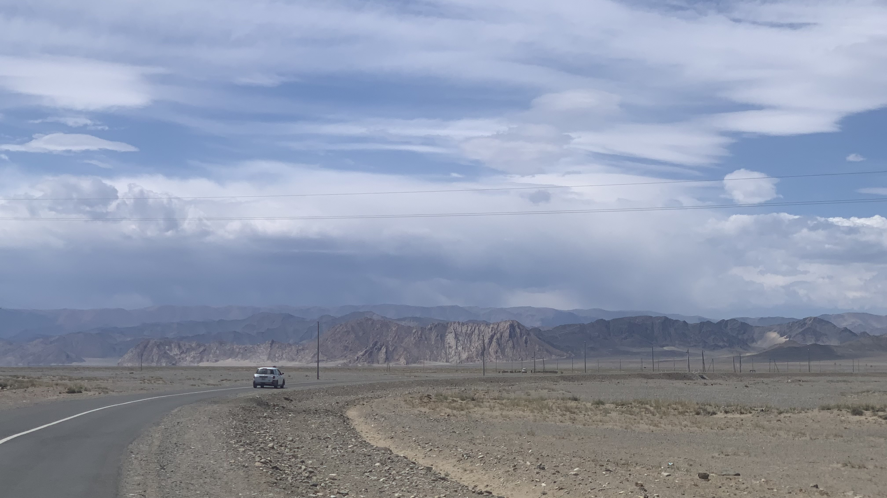
既然如此，那就朝著洞穴出發吧！
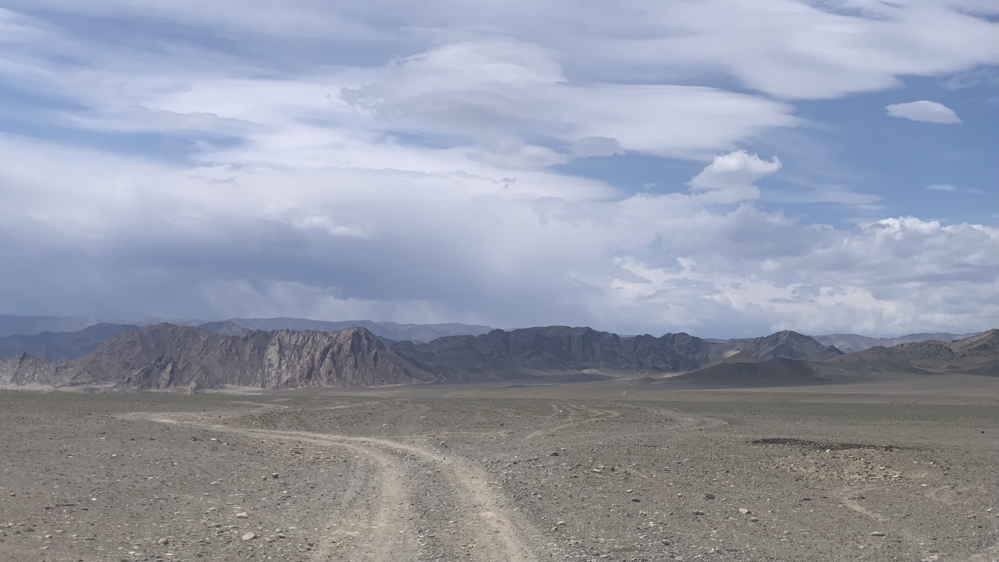
站在整排山脈面前，看著看著蜿蜒進山谷的土路，怎麼看都不妙啊。但是當地人這麼肯定地說可以，那應該是真的可以吧。
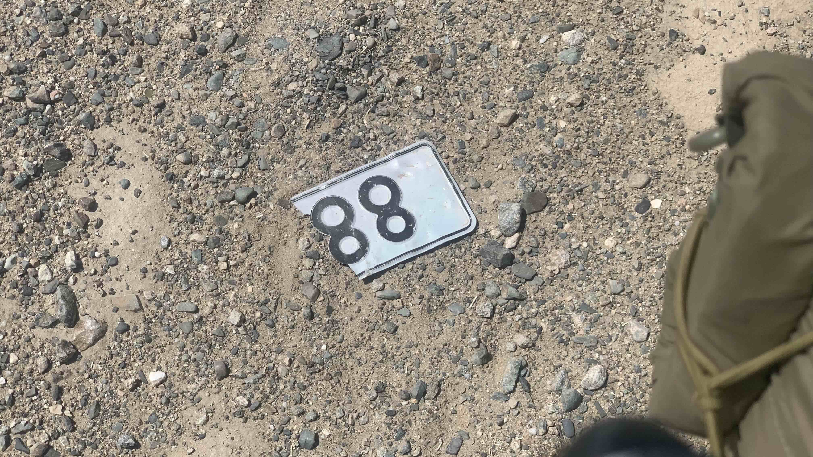
在無人的在無人的礫石上看到斷裂的路牌，有什麼含意呢？
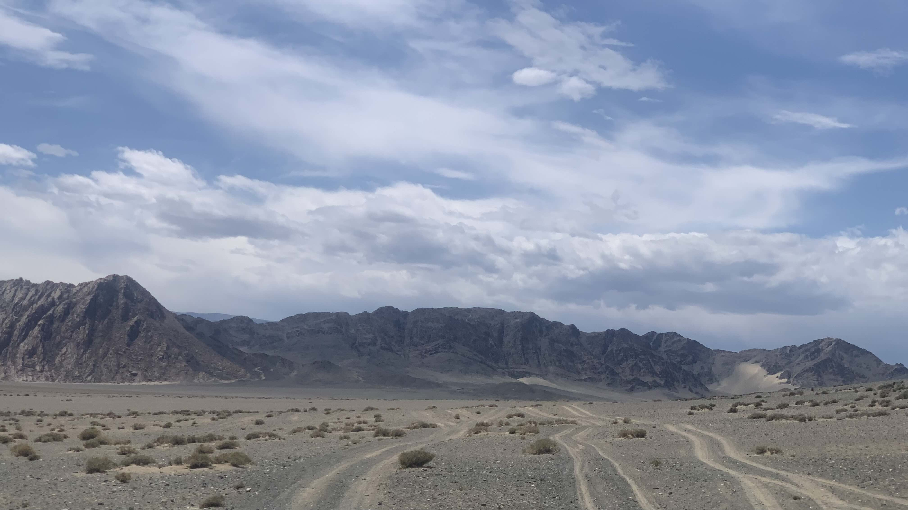
顛簸地操縱二十三號，騎一段路就得停下來推幾步車，靠近山脈後眼前的景象實在太不對勁，每座山腳下都是黃色的軟沙，甚至比起前面一整段路更細軟。
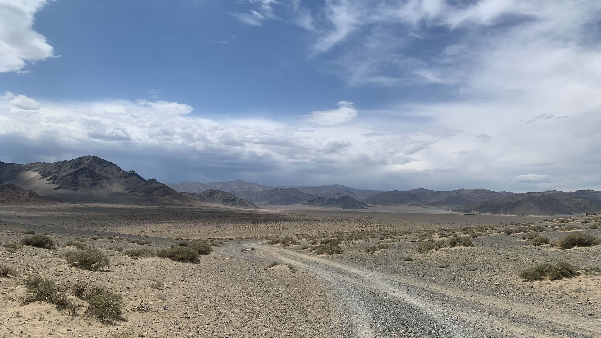
翻過第一個山坡，眼前出現整片填滿黃沙的山谷。此時已無法騎車，約莫是踩上踏板立刻摔下來的程度。
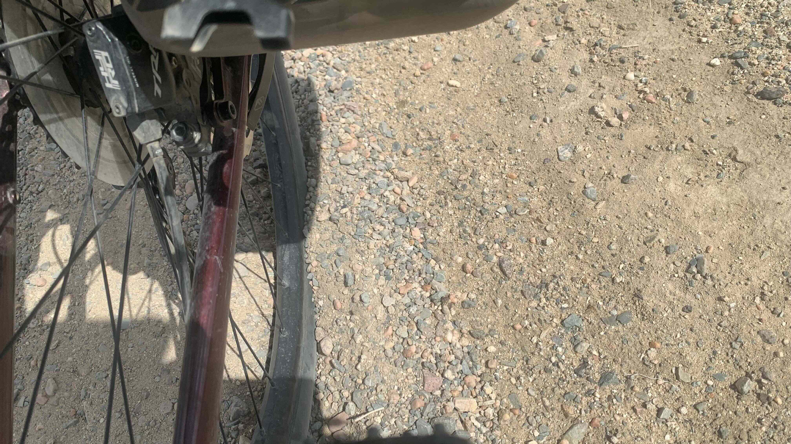
每推幾百公尺就縮在地上懷疑人生呢。主要是心累，不懂為何自己在這裡。汽水已經喝光了，水也沒剩下多少，在心裡咒罵著推車的自己：「風你也不喜歡，沙子你也不喜歡，像你這樣的人到底憑什麼覺得自己可以出來旅行？」
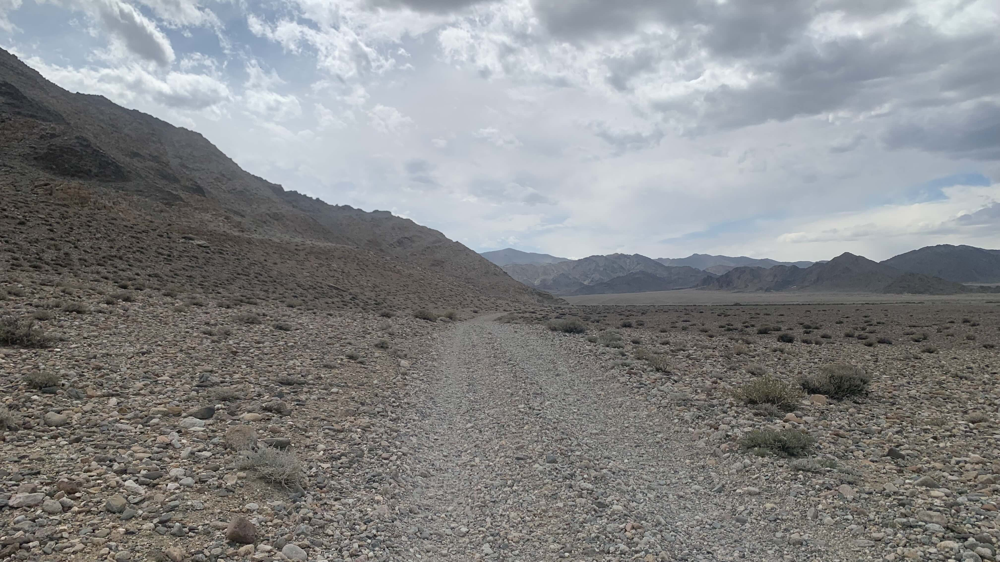
如果是正向樂觀的人，沒有花時間蹲在地上自我懷疑，也許今天晚上可以抵達營地，此刻我卻坐在石頭上。
想到這裡，又意識到一直往前的人格在往西邊騎，甚至在地球畫一個圓的時候絕對不會把蒙古排進行程，他們會從哈薩克一路往東到中國，或者反過來會來蒙古騎自行車的人，一般都是針對橫跨蒙古這件事本身，不會有人拖著前面三個國家的疲憊和殘破裝備再過來跨蒙古。
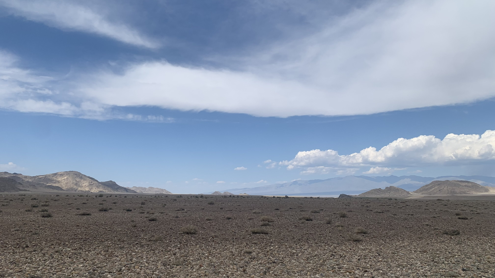
現在推著車走在山谷裡要去看壁畫的就是這個軟爛的自己，也沒辦法活出另一個人格了不是嗎？想到這裡，就繼續站起來推著車往山谷走。
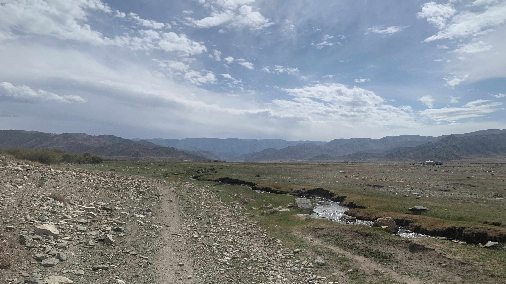
轉了一個彎，出現一條河道。
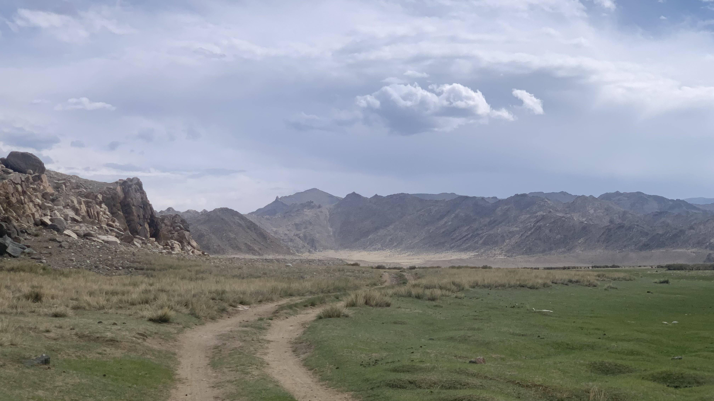
至少保證明天的飲水來源，即便今天推不到，只要往回走到河邊就能取水，安心之後推著車繼續往前走。
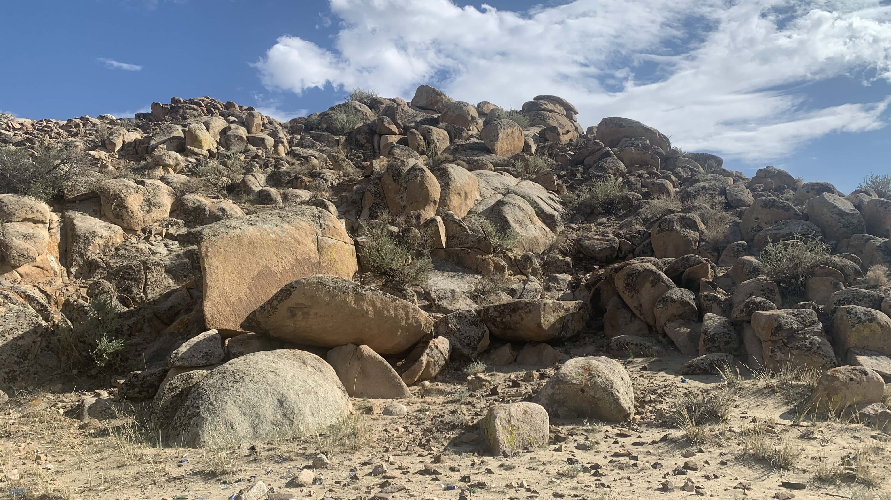
走過一片大石頭，碎石土路細成黃沙。
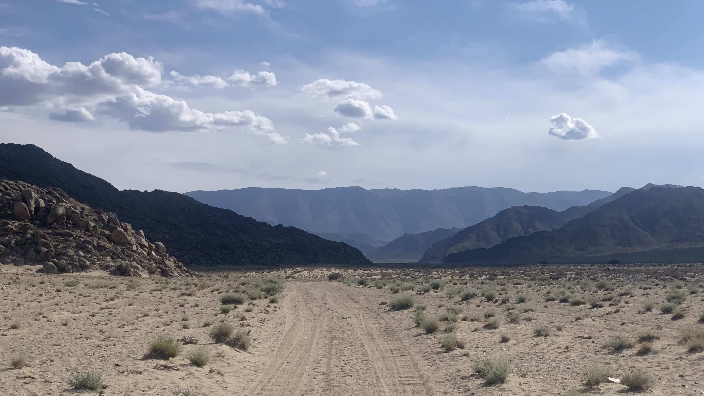
腳踝拐了幾次，膝蓋隱隱痛了起來，心中開始懷疑究竟要不要往前走。停下來觀察眼前的景象，沙地上仍然有馬蹄印、羊蹄印，車徹痕跡仍然明顯。走了幾步看到不小的獸足印，前方應該還是有人跡的。
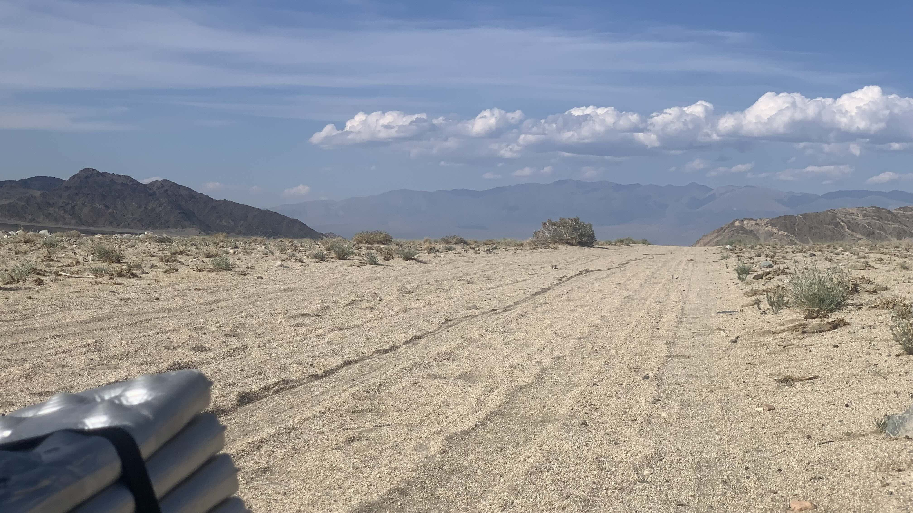
回頭看了一眼，二十三號的車輪歪歪扭扭地在沙地上拖出一條線。手機訊號剩下一格，已經晚上七點，不適合再繼續前進。
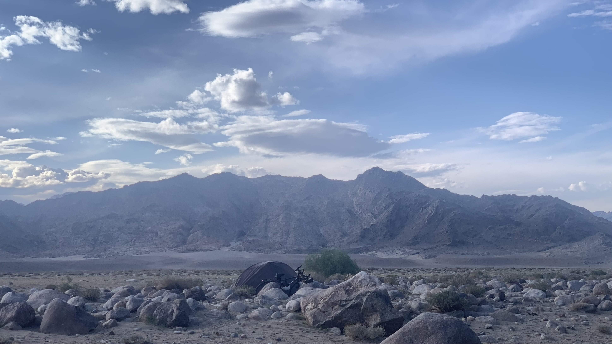
離開車道在乾枯河床的石頭堆裡找了相對平坦的空間，舉起手還能與外界聯繫的狀態。先跟洞穴下方的蒙古包營地聯繫，明天還有十五公里，預計下午兩點前抵達。
今日花費： 食糧+水 32500元